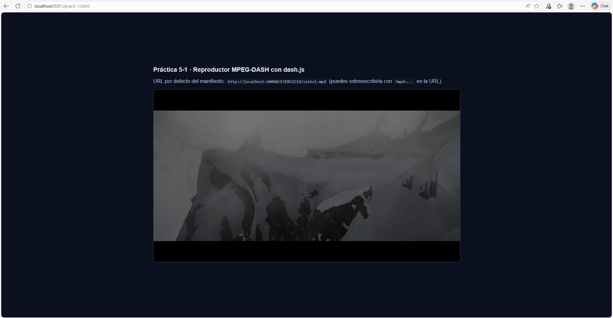
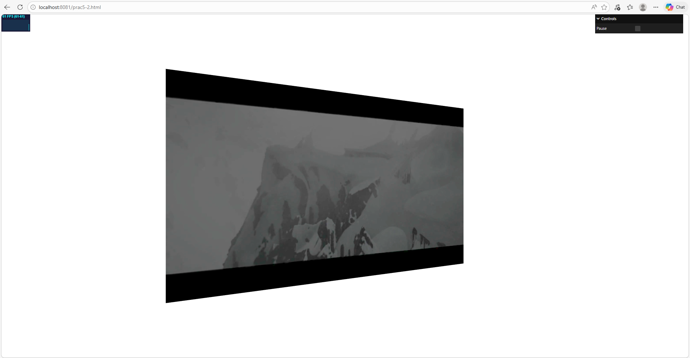

Memoria
Resumen de tareas realizadas y resultados
Durante la sesión se trabajó con distribución de vídeo mediante MPEG-DASH y con la integración de dash.js en páginas web propias.
- Se revisó el funcionamiento de DASH (manifiesto MPD, AdaptationSet, Representation y segmentación).
- Se sirvió contenido DASH desde servidor HTTP con CORS activo y se probó reproducción adaptativa.
- Se integró un reproductor DASH básico en prac5-1.html.
- Se adaptó la escena de textura de vídeo para usar un flujo DASH como fuente de textura en prac5-2.html.
Resultado final: ambas escenas se reproducen correctamente, permitiendo conmutación adaptativa de calidad en función de la red y uso del vídeo DASH dentro de una escena 3D de Three.js.
Escena 1 (prac5-1): Reproductor DASH con dash.js
Se creó una página con un elemento video#player y se inicializó dash.js con: player.initialize(document.querySelector('#player'), url, true). El manifiesto se toma por defecto de http://localhost:60080/EJERCICIO/sintel.mpd, y puede sobrescribirse con ?mpd=....
Escena 2 (prac5-2): Textura de vídeo a partir de MPEG-DASH
Se partió de la práctica de textura de vídeo y se sustituyó la fuente local por un vídeo DASH. Tras la interacción del usuario (botón Iniciar), dash.js comienza la reproducción y cada frame del vídeo se copia a un canvas intermedio para actualizar la textura del plano en Three.js. Además, se mantuvo el control de pausa de la rotación con GUI.
Ejercicio 3.4: Preparación del vídeo Sintel (Multiresolución)
Para servir el vídeo de Sintel mediante MPEG-DASH con tres calidades diferentes (480p, 720p y 1080p) junto con una pista de audio unificada, fue necesario demultiplexar y recodificar los flujos originales utilizando ffmpeg, para finalmente empaquetarlos con MP4Box.
El proceso y los comandos ejecutados en la máquina virtual fueron los siguientes:
-
Extracción de la pista de audio (tomada de la versión 480p):
ffmpeg -i sintel_trailer-480p.mp4 -vn -acodec copy audio.mp4
-
Extracción y recodificación de las pistas de vídeo (perfil H.264, 24fps, un I-frame por segundo):
ffmpeg -i sintel_trailer-480p.mp4 -an -c:v libx264 -r 24 -g 24 video_480.mp4 ffmpeg -i sintel_trailer-720p.mp4 -an -c:v libx264 -r 24 -g 24 video_720.mp4 ffmpeg -i sintel_trailer-1080p.mp4 -an -c:v libx264 -r 24 -g 24 video_1080.mp4
-
Generación del manifiesto DASH:
MP4Box -dash 5000 -profile onDemand -out sintel.mpd audio.mp4 video_480.mp4 video_720.mp4 video_1080.mp4
Al mantener el audio y el vídeo en AdaptationSets separados, se garantizó que el reproductor web pudiera conmutar dinámicamente entre las distintas resoluciones de vídeo sin que el sonido sufriera interrupciones, cumpliendo con los requisitos de las extensiones MSE (Media Source Extensions) de los navegadores.
Respuestas concisas a cuestiones del guion
¿Cuántas codificaciones de audio y vídeo se ofrecen en el manifiesto final usado? Se ofrece una pista de audio y tres representaciones de vídeo.
¿Qué resoluciones de vídeo se usan? 480p, 720p y 1080p.
¿Qué se observó al reproducir con Auto Switch activado? El reproductor selecciona automáticamente la representación más alta posible según el ancho de banda y, al degradar la red, reduce bitrate para evitar cortes.
¿Por qué fue necesario activar CORS en el servidor? Porque el reproductor web realiza peticiones a un origen diferente y sin CORS el navegador bloquea la carga del MPD y de los segmentos.
¿Por qué se usa interacción del usuario antes de reproducir? Para cumplir la política de autoplay del navegador y evitar bloqueo de reproducción automática con audio.
Dificultades surgidas y solución aplicada
1) Error de reproducción por contenido mixto (HTTPS/HTTP): si el cliente de referencia se abría en HTTPS y el MPD estaba en HTTP, el navegador bloqueaba la carga. Solución: abrir el reproductor en HTTP o servir también el manifiesto por HTTPS.
2) Problemas de compatibilidad de códecs/navegador: algunos navegadores no reproducían ciertos ficheros directamente. Solución: separar pistas audio/vídeo y recodificar vídeo a H.264 perfil baseline cuando fue necesario antes de regenerar el MPD (tal y como se resolvió en el ejercicio 3.4).
3) Error de entorno local con npm/workspaces: inicialmente el entorno no encontraba npm y faltaba PL5 en la lista de workspaces del proyecto raíz. Solución: instalación de Node.js LTS, refresco del PATH y corrección del package.json raíz.
Capturas de pantalla significativas
Se incluyen a continuación las dos capturas principales de los ejercicios para facilitar la revisión sin necesidad de levantar servidor.


Entrega
La memoria queda compuesta por archivos HTML, JS y recursos dentro de PL5, y se ha generado un fichero ZIP con el contenido para su subida a la tarea correspondiente.